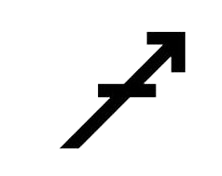

Le Sagittaire signe du Zodiaque
Le Sagittaire est le neuvième signe du zodiaque. Dans l'Antiquité, cette constellation était associée à l'hiver, au moment où le ciel nocturne était particulièrement clair et visible. Le Sagittaire est souvent lié à l'aventure, à la recherche de sens et à la liberté. C'est un centaure pour les ignares.
En astrologie, il est associé à l'élément Feu (Salamèche GO !), ce qui lui confère optimisme, curiosité et enthousiasme. Les natifs du Sagittaire sont généralement perçus comme indépendants, aventureux et philosophes. Ils peuvent aussi être impulsifs, impatients ou parfois trop directs. (Il s'agirait de se taire ! Vous l'avez ?)